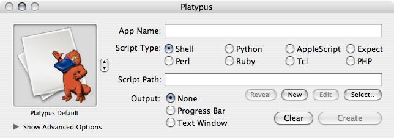
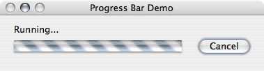
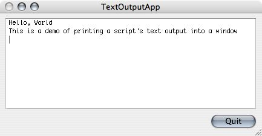
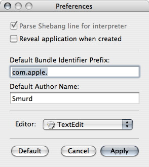
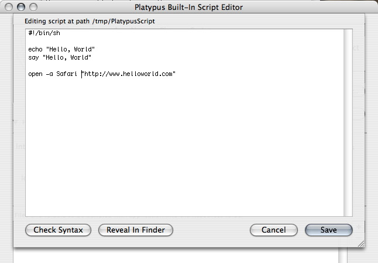
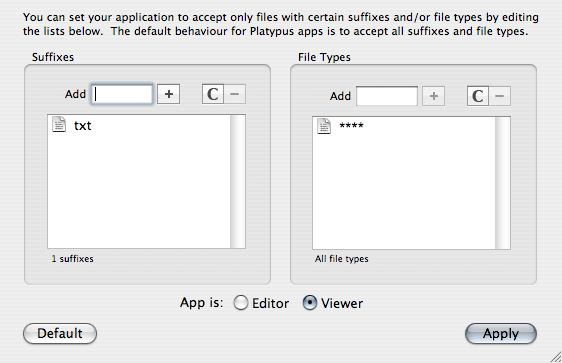
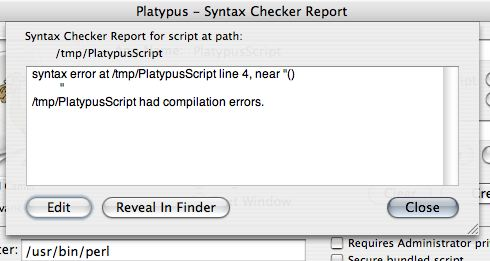
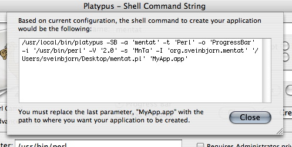
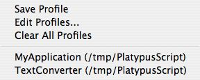
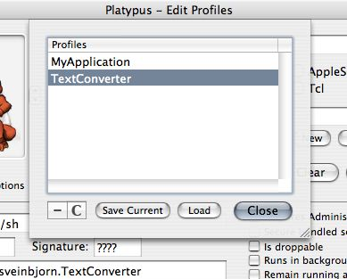

Basic Platypus Tutorial
This short tutorial will go through the basics of creating a full-fledged Mac OS X application bundle from a script file using Platypus. When you open Platypus a window pops up that should look somewhat like this:

Open your favorite text editor, write the script you want to create an application from and save it. Then find your script in the Finder and drag it on the Platypus window (or, alternately, press the "Select.." button and locate it via navigation dialog). Now it's time to configure the application.
The controls in the Platypus window are fairly self-explanatory but I'll go through them anyway:
App Name
Here you type in the name of the application you are about to create. Once you press the "Create" button, you will be prompted again for a name for your app. However, that will only be the name of the actual application bundle directory, so make sure you put in
the proper application name here.
Script Type
Depending on what kind of script you're creating an application from, you'll want to select the appropriate kind here. This defines the interpreter for your script (which can be defined manually in the Advanced options). When you select a script file, Platypus will automatically try to determine what kind of script it is by looking at the file suffix and shebang (#!) line.
Platypus also sets the default icon for the script type (e.g. a camel for Perl scripts, a snake for Python, etc.).
Script Path
This is the path to the script you'll create the app from. You either define this manually by typing in the path, by pressing the "Select" button and selecting it in a navigation dialog or by dragging your script on to the Platypus window.
Once you have selected a valid script, you can press the "Edit" button to open it in the default text editor. As of version 3.1, Platypus includes a very basic built-in text editor as the default editor. You can change this in the
Preferences to use any external editor you want.
You can also press the "New" button. This will create a text file for you in /tmp and open it in your default editor. The "Reveal" button reveals the script file in the Finder.
Output
Here you select what kind of feedback your application will generate. Platypus currently supports three options:
- None: The application will not display anything except the menu bar while running. All script output goes to STDOUT. This is the default.
- Progress Bar: A small window with a progress bar and a "Cancel" button. All script output goes to STDOUT

- Text Window: A window with a text field which receives all output (i.e. STDOUT and STDERR) from the script. This text window is *not* an interactive terminal session, and cannot thus receive any kind of input from the user.

App Icon
You can browse through template icons for your application or, alternately, drag an image or icon file for a custom icon.
There are also two menu items in the "Advanced" menu, "Select Custom Icon..." and "Import Custom Icon...", which allow you to select either an image to use as icon,
or specify a file whose icon is to be used. The app icon box has an associated contextual menu which allows you to paste in an icon from the clipboard.
It is also worth mentioning that you can "Select .icns file", to bypass Platypus' processing of images and copy a given icns file directly to the application bundle.
Show Advanced Options
The small triangle next to "Show advanced options" will expand the Platypus window to reveal more advanced options for your application.
Create
Pressing the "Create" button will set in motion the process of creating the application. You'll be prompted for a location to create application and then, if all is well, you'll have a fully functioning Mac OS X application.
Clear
The "Clear" button will set all values and controls in the window back to their default values (i.e. the same values they have when the application is newly launched).
Advanced Options
Now we'll look at some of the more advanced features Platypus has to offer. Here we see the expanded part of the Platypus window once "Show advanced options" has been pressed.

Interpreter
The "Interpreter" field gives you a chance to define an interpreter of your choice. The presets under "Script Type" cover most (if not all) of the script interpreters that come with a standard Mac OS X installation, but you may have compiled new versions in a different location.
Please note that you cannot pass options to the interpreter via this field. As an example, you could not put "/usr/bin/perl -w" in this field. Passing options to the interpreter is not possible...for now.
Version
You can set the version of your Platypus app. The default is 1.0, but you are free to assign any value you please. The version is listed in the Finder's "Get Info" window and under "About My App..." menu in the application itself.
Signature
This is really just a heritage thing. In Classic MacOS, every application had a 4-character identification code called the "Creator Type" or "App Signature". The default "????" should be fine for most people. If you do decide to assign your app a "Creator Type", be mindful of the fact that Apple has reserved all lowercase-only combinations.
Identifier
If you have typed in a name for your application, the "Identifier" text field will contain something like "org.your-user-name.YourAppName".
Every Mac OS X application has a unique string called the "Bundle Identifier", which is a kind of reverse DNS name (i.e. "com.apple.iTunes").
Platypus automatically formats the bundle identifier using the application name and default user name, but you can subsequently edit it if you want to.
Author
Author defaults to your full user name, but you can change this in the Preferences. The string in this field will be placed in the About box of your application, and in all copyright notices and Info strings.
Requires Administrator privileges
Checking "Requires Administrator privileges" will cause your application to prompt for an Administrator password and then execute the script with administrative privileges via Apple's Security Framework. If you encounter any problems with executing privileged operations in your script with this mode checked, you can try to go into the application bundle of the application you just created and chown your script (i.e. the 'script' file in the "Resources" folder) so that it has owner root and group wheel. There are sound reasons why Platypus does not do this for you.
Please note that Platypus scripts do not support the use of the 'sudo' command. This will cause the script to prompt for input, and since none will be forthcoming, your
application will hang indefinitely. If you wish to execute a command with privileges, you must execute the script in its entirety with those privileges by checking "Requires Administrator Privileges".
Secure bundled script
If you select this option, Platypus will do three things. First of all, it will generate a CRC32 checksum for the bundled script within the application, which causes your Platypus-generated app to refuse to execute the script if it has been modified after being bundled with the app. Secondly, the script will be hidden by prepending a '.' in front of the script's file name. This will make it invisible in the Finder and command line interface (unless you use 'ls -a'). Finally, the script will be encrypted using a very simple encryption algorithm (a slightly modified version of the 'rot13' algorithm). Please note that none of these precautions can ever stop a determined hacker from getting a clear-text version of your script, for in order to be executed, the script must be presented in clear-text to the interpreter. However, they may serve to dissuade a less determined tinkerer.
Is droppable
Enabling "Is droppable" for an app will modify the property list for for the app in question so that it can receive dropped files in the Dock and Finder. These files are then passed on to the script as arguments via @ARGV. However, the first argument to the script ($ARGV[1], $1 etc., depending on your scripting language of choice) is always the path to the application bundle (for example "/Applications/MyPlatypusApp.app").
Once you've checked "Is droppable", a small button called "Edit Types" appears. You can read more about editing accepted File Types in Other Features at the bottom of this document.
Runs in background
If you select this, your application will register itself as a "User Interface Element". When the app is launched, it will not show up in the Dock and its windows will not move to the front.
Remain running after completion
This option will cause your application to stay open once the script has been executed. If you selected output of type "Progress Bar" or "Text Window", the "Cancel" button on the window your application displays will change its name to "Quit". If your application
is a droplet, it will *not* accept further dropped files. You'll have to quit and drag the files on it again. This is a limitation that will be overcome in future versions of Platypus.
Files to be bundled with application into Resources folder
You can create a list of files to be copied into the Resources folder of your application bundle. These files can then be used in your script by referencing "$1/Contents/Resources/[SomeFileName]". The "+" and "-" buttons add and remove files, respectively, while "C" clears the list and the magnifying glass button reveals the selected file in the Finder.
Preferences
Platypus has very few preferences, and they should be fairly self-explanatory.
There is an option to have Platypus reveal applications in the Finder after they've been created.
You can also change the default bundle identifier prefix and author name for your script apps.

You can also select your script editor. The menu contains five presets: the very basic built-in Platypus editor (see image below) and the most common text editors on the Mac OS X platform (TextEdit, SubEthaEdit, BBEdit and XCode), but you can select any GUI-based Mac editor which supports plain text files and accepts AEOpenDocument Apple Events.

Other Features
Platypus sports some additional features that may be of interest to people who find themselves using Platypus to create highly customized applications.
Editing Types and Suffixes
If you set your script application to be droppable (i.e. accept dropped files as arguments), you may wish to restrict what sort of files the user can legitimately drop on your app.
To edit the Types and Suffixes your application accepts, you have to check the "Is droppable" checkbox and then press the small "Edit Types" button which appears.
This should display the following window:

The default behaviour is to accept all suffixes, all file types and folders. You can edit those two lists to suit your needs. If you want your application to accept dropped folders, you should
add the File Type 'fold'. You can also set whether your application is an Editor or a Viewer for files. This is not really important, per se, but it is one of many pieces of information the Finder stores about application bundles. If you want a greater level of control over your application's associated document types, you may want to check out my program AppHack, which is a developer and theming tool to modify application bundles and their associated icons and document types.
Run script in Terminal
Under the "File" menu, there is an item called "Run script in Terminal". This will open Terminal.app and execute the script specified in the "Script Path" text field. It will not execute the script with privileges, even if you have selected "Requires Administrator privileges".
Check Script Syntax
Under the "File" menu, there is an item called "Check Script Syntax". This option will run the currently specified script through its interpreter's syntax checking mechanism and report the result in a sheet window like the one below.

Please note that syntax checking is only supported for those script types whose interpreter supports this option. As of writing, this includes shell, Perl, Ruby and PHP scripts. The syntax checking commands issued for each interpreter are the following:
Shell: /bin/sh -n "/path/to/script"
Perl: /usr/bin/perl -c "/path/to/script"
Ruby: /usr/bin/ruby -c "/path/to/script"
PHP: /usr/bin/php -l "/path/to/script"
Python: Platypus.app/Contents/Resources/pycheck.py "/path/to/script"
The output from these syntax-checking commands is then passed into the text field of the sheet you see above. As far as I know, the interpreters of other script types directly supported by Platypus do not have a syntax checking feature.
Import Custom Icon
Under the "Advanced" menu, there is an item called "Import Custom Icon...". This allows you to select a file and that file's icon will be set as the custom icon for your application. This is different from the "Select Custom Icon" menu item, which requires that you select an image file whose contents will consequently be used as the custom icon.
Select icns file
Under the "Advanced" menu, there is an item called "Select icns file...". This allows you to select a Mac OS X icon file (.icns) to copy over the application bundle as app icon file. This bypasses Platypus's processing of images, and thus prevents smaller icon representations from disappearing from the app's eventual icon file.
Show Shell Command
Under the "Advanced" menu there is a menu command called "Show Shell Command". Selecting this item will bring down a sheet with a text field containing a command line command for executing the platypus command line with the options you selected in the GUI.
This can be helpful if you have the 'platypus' command line tool installed and wish to automate the creation of script apps. See screenshot below:

Profiles
Profiles were implemented in Platypus for the hardcore user. If you use Platypus often, you may grow tired of continually filling out all those fields and settings. It is therefore possible to save the current configuration into a "Profile" via the "Profiles" menu. Then, when you wish to restore your configuration at a later date, you can simply select it from your list of saved profiles.

Profiles will remember every single configuration you may have made, including icon, interpreter, script path, app name, options, Types configuration etc. For more sophisticated tracking of Profiles, you can select the "Edit Profiles" menu item, which brings up an editable list of profiles you have created:

©2006 Sveinbjorn Thordarson